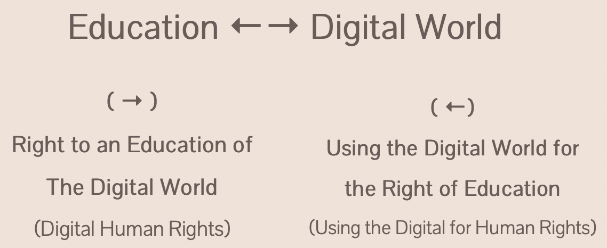
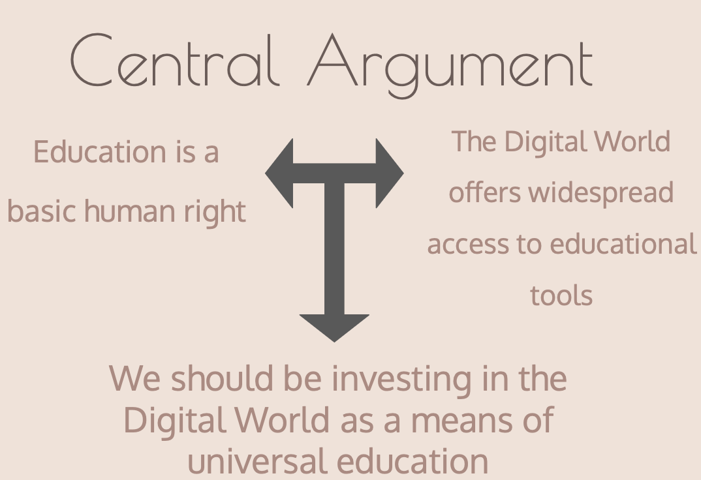

To identify the intersection of the digital world
and education with the intention of identifying universal
human rights.
How educated do you feel on the digital world?
Where are the gaps?
How have you been educated?
II. Assumptions
To identify the intersection of the digital world and education with the intention of identifying universal human rights.
II. Assumptions
1. UDHR Assumptions:
"Everyone has the right to education. Education shall be free, at least in the elementary and fundamental stages."
Education shall be directed to the "full development of the human personality and to the strengthening of respect for human rights and fundamental freedoms. It shall promote understanding, tolerance and friendship among all nations, racial or religious groups, and shall further the activities of the United Nations for the maintenance of peace." --Article 26
"Everyone has the right freely to participate in the cultural life of the community, to enjoy the arts and to share in scientific advancement and its benefits." --Article 27
2. Our Assumptions:
i. “Universal” = Anyone participating in the Digital World
ii. Understanding of the digital world improves human potential and self-actualization.
III. Bijection
To explain the intersection between rights regarding Education and the Digital World, this document will
utilize a bijection to 'digitize human rights'

On one hand, individuals have the right to be educated about the Digital World. This education entails
being knowledgeable of how to be online (accessibility), how to behave once online (well-being), and
of rights that exist in the digital world.
On the other hand, as education is a universal right and the digital world is capable of providing largescale and free educational resources,
it is in the best interest of the public to invest in online education.
The following example provides an explanation of the established bijection:
1. A Handbook Example: Digital Citizenship Education Handbook
1. A Handbook Example: Digital Citizenship Education Handbook
Education on human rights in the digital space The content of the handbook: Education on human rights in the digital space
Use of digital space for education Format and distribution of the handbook: The handbook is free and distributed online. Everyone with access to the internet can read and download it.
Click the cover above to learn more about the handbook.
Observe, this webpage also serves as a bijection example.
Education → Digital World, This digital document aims to serve as an educational tool by
organizing content regarding the digitizing of rights on Education and by facilitating conversations
Education ← Digital World, furthermore, by being a web page this document is easily accessible for all users
IV. Education → Digital World
Right to an Education of the Digital World:
Following the topics identified by the above handbook, this project has 3 sections:
Guiding Questions regarding Digital rights:
Can we use digital literacy and hone the general capabilities of the
internet to educate people about certain topics across the various disciplines
covered in this document?
Ecology: How do we navigate the relationship between individual liberty and common good through the intersection of
Ecology and the Digital World
Corporate Power: Consider surveillance capitalism, informing people about who has access to their data, how they are using it,
and how the structure of corporations allows for these pervasive processes to occur?
Privacy: What data people are giving up when they sign digital agreements (terms and agreements)
and how do we retain agency in these agreements?
Freedom of Expression: Where do restrictions on expression come from?
How do we navigate the relationship between freedom of expression and respecting
possible negative outcomes from this liberty in the digital world?
Property: When are digital entities using your property (with or without permission, intellectual or tangible property)?
How do we protect our property rights?
Check out the Preamble to learn more about these Digital Rights!
V. Education ← Digital World
The Digital World for the Right to Education(Scroll over image for further explanation)

VI. Rights vs. Responsibilites
Food for thought, extending the conversation past 'rights' and into 'responsibilties'
It is important to note the largely individualistic objectives
presented in the UDHR in regards to liberties. With our document, we wanted to
emphasize how to navigate the relationship between rights versus responsibilities
in the digital sphere. The digital sphere is a communal space wherein people all over the world
communicate, share, create and consume. In this communal space, there must be care taken
towards respecting the common good, even if that means a small trade-off in certain personal
liberties. For example, some people may consider hate speech to be falling under a personal
liberty of freedom of speech, and this sentiment may be emboldened by the anonymity aspect
of the internet. However, emphasizing the collective over the individual would mean blocking
this speech to protect the larger good.
How does responsbility come into the conversation of Universal Rights?
How could Digital Responsibilites be enforced?
How could does responsibility exist with the anominitiy of the Digital World?